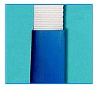

Guaine e paraspigoli
Guaina tubolare in poliuretano
Guaina tubolare in poliuretano per la protezione del nastro.
- Materiale
- Poliuretano
- Spessore
- 5 mm
Varianti documentate
Confronta i dati disponibili. Le tavole originali completano le informazioni della scheda.
| Variante | Larghezza nastro |
|---|---|
| N-240 | 50 mm |
| N-241 | 60/65 mm |
| N-242 | 75 mm |
| N-243 | 100 mm |
| N-244 | 150 mm |
| N-245 | 200 mm |
| N-246 | 250 mm |
| N-247 | 300 mm |
Prima di scegliere.
Dati trascritti dal catalogo originale. Portate, misure, configurazioni e riferimenti normativi vanno confermati nella documentazione del prodotto fornito; i valori non costituiscono istruzioni di impiego.